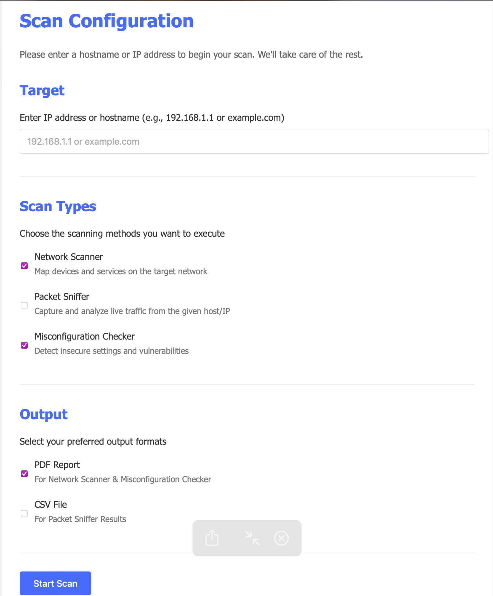

Project Overview
A comprehensive Python-based toolkit for network scanning, vulnerability detection, and automated PDF report generation. Designed for cybersecurity professionals who need efficient network assessment tools.
Key Features
- Customizable network scan profiles
- Port scanning and service detection
- ICMP host discovery
- Automated PDF report generation
Technologies
- Python
- Nmap integration
- WeasyPrint for PDFs
- Multi-threading
Technical Implementation
Scan Configuration Interface
The intuitive interface allows users to customize scans based on their specific security assessment needs.
Automated Reporting
Professional PDF reports are generated automatically, saving hours of manual documentation work.

Development Highlights
- Integrated Nmap's powerful scanning capabilities with Python's flexibility
- Implemented threading for efficient scanning of multiple targets
- Designed clean PDF templates with WeasyPrint for professional reporting
- Added customizable scan profiles for different security assessment needs